SUPEX（スペックス）
古くからMC型カートリッジを手がけていたブランド。創業者はグレースの創業者と兄弟の関係にあり、また初期のLINNのMC型カートリッジの受託者でもある。オーソドックスなオルトフォン型のMCを得意としていた。アナログ関連製品は、販売期間が長い製品が多く、途中で値上げされることがしばしばあるが、このブランドは、1990年に製品価格を2倍（一部のアクセサリーでは3倍）近くに値上げした。1995年頃までは販売を続けたが、2000年を迎えることはできなかったようだ。
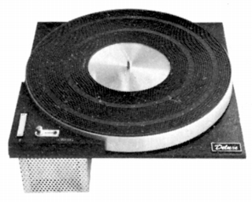
（ターンテーブルV-500A。ベルトドライブ時代にはターンテーブルも発売していた。）
�T.カートリッジ
1.MC型
�@SD-600系
1960年代後半の廉価機種。
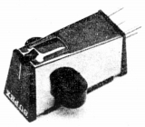
�ASD-700系
1960年代後半〜1970年代当初の中核モデル。
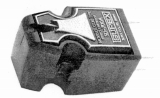
SD-700A SD-700Aラボラトリー SD-700Aラボラトリー�U SD-700 TYPE�U/E
�BSD-800系
高出力タイプ。
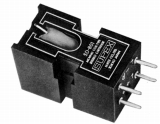
�CSD-900系
「光悦」と同様の木製フレームで始まったシリーズ。900がスタンダートタイプで、901が高出力の廉価版。
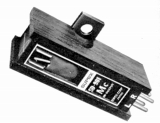
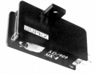
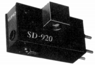
�DSD-1000系
トランス内蔵による高出力タイプ。
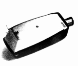
�ESDX系
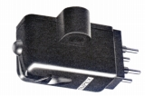
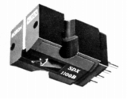
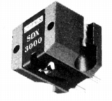
�FSD-300系
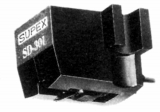
2.MM型
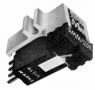
(SM-100Mk�U)
�U.ヘッドアンプ・昇圧トランス
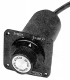
(SDT-55)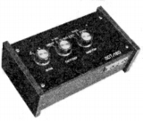
(SDT-180)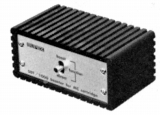
(SDT-1000)
�V.アーム
1970年代初頭に終了。
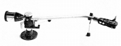
(6140D)
�W.その他
種目別の点数は少ないが、かなり多彩なアクセサリーを手がけていた。なお一部のアクセサリー（シェル等）は「スウィング」のアクサアリーと同一のものと思われる。
�@ヘッドシェル
�Aクリーナー
�Bその他